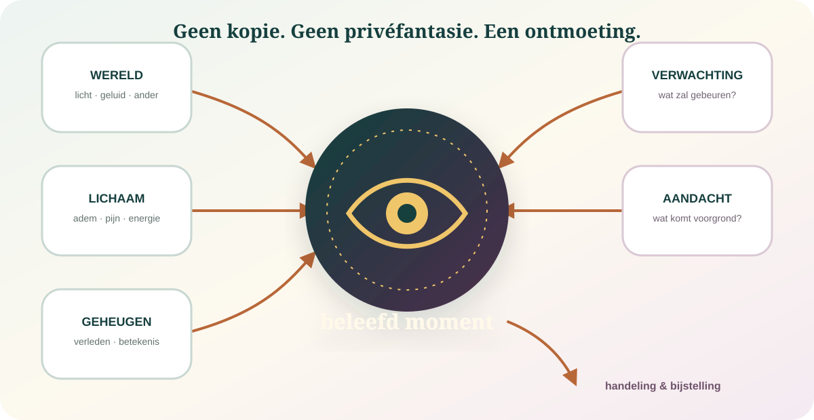

De kern in gewone taal
Een ervaring is geen foto die in je hoofd wordt afgeleverd.
Op ieder moment komen signalen van buiten, signalen uit je lichaam, eerdere verwachtingen, aandacht, herinneringen en betekenissen samen. Wat jij ziet, voelt en denkt ontstaat uit die ontmoeting. Dat maakt ervaring persoonlijk en veranderlijk — maar niet willekeurig. De wereld biedt weerstand. Je lichaam stelt grenzen. Andere mensen kunnen je corrigeren. Een constructie kan werkelijkheidsgevoelig zijn.
Je zenuwstelsel selecteert en ordent meer informatie dan bewust kan verschijnen.
Lichaam, omgeving, handeling en andere mensen vormen mee wat een situatie wordt.
Een ervaring is echt als ervaring. De verklaring die je eraan geeft kan toch onvolledig of fout zijn.
Bewustzijn vraagt waarom er een binnenkant is. Ervaring vraagt hoe deze binnenkant vorm krijgt.
Waarom verschijnt er überhaupt iets?
Wanneer is een toestand bewust? Welke hersenprocessen hangen ermee samen? En waarom zou informatieverwerking ergens naar voelen?
Waarom verschijnt precies dít?
Waarom klinkt dezelfde stilte vandaag dreigend en morgen rustgevend? Hoe worden kleur, lichaam, aandacht, verwachting en betekenis één moment?
Dit onderscheid is geen natuurgrens. Onderzoekers en filosofen gebruiken de woorden anders. Het helpt ons vooral om niet ieder raadsel tegelijk op te lossen.
Dezelfde gebeurtenis is niet voor ieder zenuwstelsel dezelfde gebeurtenis.
Een dichtslaande deur heeft meetbare eigenschappen: luchttrillingen, volume, duur. Toch kan hij schrik, irritatie, opluchting of bijna niets oproepen. Het binnenkomende signaal is niet veranderd; de betekenis ervan wel. Slaaptekort, veiligheid, eerdere gebeurtenissen, waar je aandacht zat en wie de deur sloot kunnen het moment anders laten landen.

Wereld
Wat komt je tegemoet?
Licht, geluid, temperatuur, woorden, gezichten en weerstand begrenzen wat geloofwaardig kan verschijnen.
Lichaam
In welke toestand ontmoet je het?
Hartslag, adem, honger, pijn en vermoeidheid kleuren urgentie en beschikbare aandacht.
Verwachting
Wat denk je dat er gaat gebeuren?
Eerdere regelmaat helpt dubbelzinnige signalen sneller interpreteren — soms raak, soms mis.
Betekenis
Wat staat hier voor jou op het spel?
Doelen, relaties, herinneringen en cultuur maken van sensatie een gebeurtenis in een leven.
Je brein wacht niet passief tot de wereld af is.
Predictieve-verwerkingsmodellen stellen dat het brein voortdurend verwachtingen vormt over zintuiglijke input. Verschillen tussen voorspelling en signaal — voorspellingsfouten — kunnen het model bijstellen. Zo hoeft het systeem niet ieder beeld of geluid vanaf nul te ontcijferen. In een drukke kamer hoor je je naam sneller; in een mistige straat kan een paal even een persoon lijken.
Verwacht
Context en eerdere ervaring maken sommige interpretaties waarschijnlijker.
Ontvang
Zintuigen leveren onvolledige, ruisrijke en voortdurend veranderende signalen.
Weeg
Het systeem schat in welke signalen en verwachtingen op dit moment betrouwbaar zijn.
Herzie
Een betekenisvol verschil verandert waarneming, handeling of het model voor later.
Een groot overzicht uit 2026 waarschuwt dat “voorspellingsfout” in studies verschillende berekeningen kan betekenen. Activiteit die bij een voorspelling past, bewijst nog niet één universeel algoritme. Het raamwerk is vruchtbaar, maar definities en toetsbare voorspellingen moeten scherper.
Je ervaart niet simpelweg wat je verwacht. Je verwachtingen worden voortdurend onderbroken door wat er werkelijk gebeurt.
Een wereld voelt anders wanneer je lichaam alarm slaat.
Interoceptie verwijst naar het verwerken van signalen uit het lichaam, zoals hartslag, ademhaling, temperatuur, verzadiging en spanning. Die signalen dragen bij aan lichaamsbesef en emotionele ervaring. Maar “goed naar je lichaam luisteren” is geen eenvoudige superkracht. Onderzoekers onderscheiden onder meer objectieve taakprestatie, zelfgerapporteerde gevoeligheid en vertrouwen in je eigen inschatting. Die maten vallen lang niet altijd samen.
Wat gebeurt er lichamelijk?
Een hartslag of maagbeweging is een fysiologische gebeurtenis, vaak zonder bewuste aandacht.
Wat komt in ervaring?
Je kunt druk, hitte, kramp of onrust voelen zonder de precieze oorzaak te kennen.
Wat denk je dat het betekent?
“Gevaar”, “honger”, “opwinding” of “vermoeidheid” is een duiding die context gebruikt.
Wat doe je ermee?
Vermijden, onderzoeken, ademen, eten of hulp zoeken verandert de volgende ronde van signalen.
Gevoeld is niet verzonnen: wanneer een lichamelijke klacht mede door aandacht, verwachting of stress wordt beïnvloed, blijft de pijn of benauwdheid echt. “Psychologisch” betekent niet “doet alsof”, en nieuwe of ernstige klachten verdienen medische beoordeling.
Aandacht is geen zaklamp die een complete wereld verlicht.
Je kunt maar een deel van de beschikbare informatie gebruiken voor bewuste keuze en rapportage. Aandacht verhoogt sommige signalen, doelen of verwachtingen en laat andere naar de achtergrond verdwijnen. Dat verklaart waarom twee mensen op dezelfde plek andere details meenemen — en waarom je later verbaasd kunt zijn over wat je niet zag.
Wat niet werd opgemerkt, was daarom niet afwezig. De ervaring is rijk aan gevoel, maar arm vergeleken met alles wat tegelijk in lichaam en omgeving gebeurde.
Doelen sturen selectie. Een fotograaf ziet licht, een architect draaglijnen, een angstig mens uitgangen. Deskundigheid kan waarneming verfijnen; bedreiging kan haar vernauwen. Geen van beide maakt één blik volledig.
Wat je later ervaart als “hoe het was” is geen onaangeroerde opname.
Bij herinneren worden zintuiglijke kenmerken, gedachten, gevoelens en kennis opnieuw geïntegreerd. Emotionele herinneringen kunnen levendig en overtuigend zijn én door de tijd details verliezen of toevoegen. Dat betekent niet dat iedere herinnering vals is. Wel dat vertrouwen, detail en historische nauwkeurigheid verschillende eigenschappen zijn.
De oorspronkelijke gebeurtenis
Wat werkelijk gebeurde werd al selectief waargenomen, vanuit één plaats, lichaam en aandacht.
De huidige reconstructie
Nieuwe kennis, herhaalde verhalen, stemming en doelen bepalen mee welke onderdelen worden opgeroepen.
Voorzichtig bij trauma: levendigheid bewijst geen volledige nauwkeurigheid, maar gewone geheugenvervorming bewijst evenmin dat een gebeurtenis niet plaatsvond. Forensische en therapeutische conclusies vragen gespecialiseerde, niet-sturende beoordeling.
Een gevoel krijgt niet overal dezelfde naam — of hetzelfde middelpunt.
Cultuur bepaalt niet van buitenaf wat je “moet” voelen. Ze biedt wel woorden, categorieën, scripts en aandachtspunten. Recent vergelijkend onderzoek toont bijvoorbeeld dat mensen uit verschillende taalgemeenschappen gezichtsuitdrukkingen niet vanzelf op dezelfde manier beschrijven: de ene groep benoemt eerder een mentale toestand, een andere eerder beweging en zichtbaar gedrag.
Woorden
Welke verschillen kun je benoemen?
Een rijk vocabularium kan nuances beschikbaar maken, maar een naam kan ook meerdere ervaringen te snel samenklappen.
Normen
Wat mag zichtbaar worden?
Een omgeving kan trots, woede, verdriet of lichamelijkheid aanmoedigen, bestraffen of anders interpreteren.
Verhaal
Wat voor gebeurtenis is dit?
Dezelfde tegenslag kan als persoonlijk falen, noodlot, onrecht, test of gezamenlijke opdracht worden verteld.
Andere blik
Wie helpt je ervaring corrigeren?
Taal maakt delen mogelijk. Een ander kan bevestigen, miskennen, aanvullen of tonen dat jouw eerste uitleg niet de enige is.
Als ervaring gemaakt wordt, bestaat de wereld dan nog?
Ja, tenzij je een veel radicalere metafysische positie verdedigt — en neurowetenschap alleen beslist dat debat niet. Dat waarneming actief en contextgevoelig is, toont dat onze toegang tot de wereld bemiddeld is. Het bewijst niet dat er buiten ervaring niets bestaat.
Een onvolmaakte kaart van een echte omgeving
Waarneming is geëvolueerd om handelingsrelevante structuur op te pikken. Ze kan selectief en corrigeerbaar zijn zonder een privéfantasie te worden.
Voorspellingen die botsen met herhaalde meting, andermans waarneming en handelingsgevolgen moeten veranderen.
Een wereld die verschijnt in handelen
Ervaring zit niet alleen in een intern model. Een levend lichaam onderzoekt een omgeving en maakt mogelijkheden zichtbaar door beweging.
Het voorkomt dat brein, lichaam en wereld als drie losse dozen worden behandeld.
Is ervaring fundamenteler dan materie?
Idealisme, panpsychisme en neutraal monisme geven radicalere antwoorden op wat werkelijkheid uiteindelijk is.
Dat waarneming geconstrueerd is, is geen empirisch bewijs voor één van deze metafysische posities.
De schokkende mogelijkheid is niet dat niets echt is. Het is dat jij de werkelijkheid nooit ontmoet zonder tegelijk zelf deel van die ontmoeting te zijn.
Acht stemmen, acht manieren om het vanzelfsprekende vreemd te maken.
Anil Seth
Hoe voorspelt een lichaam zichzelf?
Verbindt predictieve waarneming, interoceptie en het ervaren zelf, met nadruk op toetsbare modellen.
Andy Clark
Is waarnemen gedisciplineerd raden?
Maakt predictieve verwerking filosofisch tastbaar, maar benadrukt dat actie en omgeving blijven meedoen.
Sonja Hofer
Wat telt echt als voorspellingsfout?
Vraagt om scherpere definities en neurale tests voor een raamwerk dat soms te veel tegelijk wil verklaren.
Sarah Garfinkel
Hoe nauwkeurig ken je je lichaam?
Onderscheidt lichamelijke prestatie, zelfgerapporteerde gevoeligheid en metacognitief inzicht.
Aikaterini Fotopoulou
Ontstaat een zelf ook tussen mensen?
Onderzoekt hoe lichamelijk zelfbesef, aanraking, zorg en sociale afstemming samenhangen.
Daniela Palombo
Waarom voelt een veranderlijk geheugen zo overtuigend?
Onderzoekt stabiliteit, emotie en vervorming in autobiografische herinneringen.
Batja Mesquita
Zijn emoties ook culturele praktijken?
Laat zien hoe relaties en culturele doelen vormen welke emotionele patronen worden uitgelokt en gewaardeerd.
Evan Thompson
Kun je ervaring begrijpen zonder het levende lichaam?
Brengt neurowetenschap, fenomenologie en enactivisme samen zonder eerste-persoonstaal tot hersendata te reduceren.
Schrijf één moment drie keer.
- 1Kies een klein recent moment.
Een blik, bericht, geluid of stilte — niet je meest pijnlijke herinnering.
- 2Schrijf alleen waarneembare signalen.
Wat zag, hoorde en voelde je lichamelijk? Laat motieven en conclusies nog weg.
- 3Schrijf je eerste betekenis.
Wat dacht je dat het betekende? Welke verwachting maakte dat logisch?
- 4Maak twee andere verklaringen.
Niet om jezelf ongelijk te geven, wel om interpretatie zichtbaar te maken.
- 5Vraag wat terugpraat.
Welke nieuwe waarneming, vraag aan de ander of herhaling zou tussen de verklaringen kunnen onderscheiden?
Stop als deze oefening onwerkelijkheid, paniek of herbeleving versterkt. Kijk rond, benoem concrete voorwerpen, beweeg en zoek contact. Zelfonderzoek hoeft geen grens te forceren.
Wanneer verder kijken?
Een veranderde ervaring kan ook een klacht zijn.
Plotselinge verwardheid, nieuwe waarnemingen zonder duidelijke bron, ernstige geheugenproblemen of blijvende gevoelens van onwerkelijkheid verdienen professionele beoordeling — zeker bij snel begin, middelengebruik, koorts, hoofdletsel of gevaar. Dit dossier kan geen oorzaak vaststellen.
Waarop dit dossier steunt.
- Kritisch overzicht · 2026Furutachi & Hofer — Rethinking Predictive Processing
Actuele beoordeling van neurale voorspellingsfouten, gemengde evidentie en noodzakelijke scherpere definities.
- Perceptieoverzicht · 2024Peelen, Berlot & De Lange — Predictive processing of scenes and objects
Hoe scènecontext en objectinformatie elkaar tijdens visuele verwerking beïnvloeden.
- Zintuigenoverzicht · 2024Vetter et al. — Evaluating cognitive penetrability of perception
Vergelijkt hoe cognitie verschillende zintuigen rechtstreeks of indirect kan beïnvloeden.
- Interoceptieoverzicht · 2024Candia-Rivera et al. — Interoception and bodily self-awareness
Over lichaamssignalen, multisensorische integratie en een netwerkperspectief op lichaamsbesef.
- Systematische review · 2024Clemente, Murphy & Murphy — Self-reported interoception and anxiety
Laat gemengde verbanden zien en waarschuwt dat subjectieve gevoeligheid niet hetzelfde is als lichamelijke nauwkeurigheid.
- Geheugenoverzicht · 2024Wardell & Palombo — Stability and malleability of emotional autobiographical memories
Waarom emotionele herinneringen tegelijk duurzaam, overtuigend en veranderlijk kunnen zijn.
- Neurocognitief overzicht · 2022Ramanan et al. — The subjective experience of remembering
Over het opnieuw integreren van zintuiglijke details, gedachten en gevoelens tot een eerste-persoonsherinnering.
- Crosscultureel onderzoek · 2024Wnuk & Wodowski — Culture shapes how we describe facial expressions
Vergelijkt mentale en gedragsgerichte beschrijvingen in twee sterk verschillende taalgemeenschappen.
Lees ook ons bronnenbeleid en het redactionele kompas van de Atlas. Een ervaring wordt hier serieus genomen zonder iedere eerste verklaring automatisch waar te noemen.